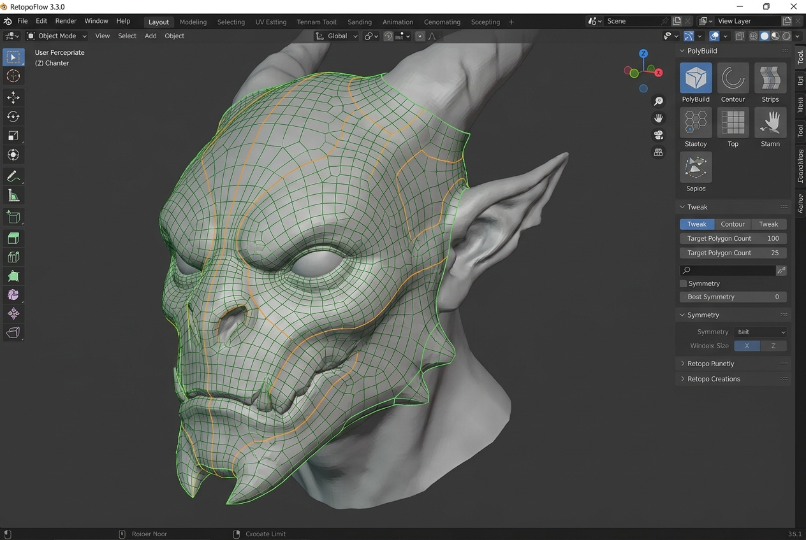
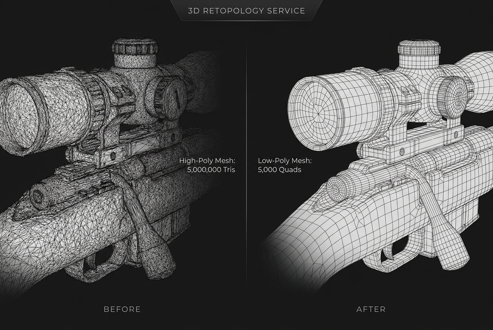

Neuralis represents the next echelon in spatial computing architecture. A deterministic framework designed to synthesize complex topological data into actionable, high-fidelity cognitive models.
Every high-poly sculpt, photogrammetry scan and CAD asset must be hand-redrawn into clean, animation-ready geometry before it can ship. That manual step still costs studios days per asset — and burns out their most senior artists.
"Retopology is the unglamorous tax every 3D production pays — and the artists who do it well are the rarest hires on the team."
— SENIOR TECH ARTIST · AAA STUDIONeuralis is an autonomous agent that drives Blender directly. The artist describes intent in natural language; the agent reads the mesh, plans, acts and validates — until the topology is clean.

Any high-poly mesh — sculpt, scan or CAD — dropped straight into Blender. No pre-processing required.
An LLM agent reads the mesh, plans a strategy and calls Blender tools through the Model Context Protocol — observing and iterating in real time.
A quad-dominant, animation-ready low-poly mesh — silhouette preserved, ready for rigging, UV and rendering.
Neuralis is not a fine-tuned model. Every session is a new data point: raw traces are distilled by an LLM into reusable rules and stored in Qdrant — the system gets measurably better with every job it completes.
Artist sculpts from ZBrush · Blender. Photogrammetry scans. CAD-derived primitives. Range: 10K to 50M triangles per mesh.
An outer Observe-Orient-Decide-Act-Learn cycle wraps an inner ZoneWorker loop that plans, executes, compresses memory, anti-loops and emits a done-candidate.
No output reaches the artist until it passes every gate — from hard topological constraints to a final regret check against alternative plans.
High-fidelity retopology pipelines transform dense input meshes into clean quad-based output — preserving silhouette, hitting real-time budgets and clearing every validation gate.

Four headline items on the roadmap — each one extending the same agentic core. Every milestone keeps the same five-stage validation guarantee.
Run Neuralis across an entire asset directory overnight — full studio-pipeline throughput.
Streamed in-viewport candidate previews so the artist can steer the agent live.
Respect UV seams, texture density and material islands when planning topology.
Open the 71-tool surface for third-party studio tools to plug into the same agentic loop.
Happy to take questions — on the business case, the architecture, the methods, or the roadmap.